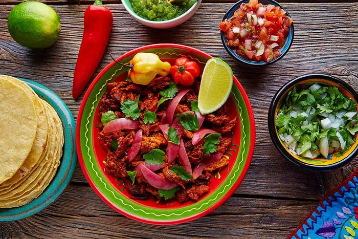

Cochinita pibil

Description
La cochinita pibil es un plato típico de la gastronomía yucateca, México.
Esta receta consiste en carne de cerdo
adobada con achiote que
originalmente se preparaba envuelta en hoja de plátano en un horno de tierra,
pero
que se puede preparar cómodamente en casa y disfrutar de este manjar
Ingredientes
- Dos kilogramos de cerdo en trozos (la cochinita pibil se trabaja mejor con partes como la costilla o falda
de cerdo, pero también puede usar pulpa de cerdo).
- Cuatro cucharadas de manteca de cerdo.
- 120 gramos de pasta de achiote.
- Una pizca de orégano.
- Una pizca de comino.
- Seis dientes de ajo.
- Una taza de jugo de naranja o limón.
- Vinagre blanco, cantidad necesaria.
- Fondo de caldo de res o pollo, cantidad necesaria.